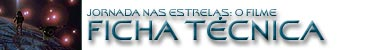

|

STAR TREK:
THE MOTION PICTURE
1979


Sinopse
comentada
Comentrios
Citaes
Os novos
efeitos
Trivia
Ficha
Tcnica
O
DVD
A Aventura Humana est
apenas
comeando...

Direo de Robert Wise
Histria de Alan Dean Foster e Gene Roddenberry (no-creditado)
Roteiro de Harold Livingston
Produo de Gene Roddenberry, Jon Povill, David C. Fein
(o ltimo somente para a verso do diretor de 2001)
Trilha sonora original de Jerry Goldsmith [tambm Gerald Fried
em algumas cenas e de forma no creditada]
Trilha sonora no-original de Alexander Courage (tema de Jornada
nas Estrelas de 1966)
Cinematografia de Richard H. Kline
Edio de Todd C. Ramsay
Elenco por Marvin Paige
Design de Harold Michelson
Efeitos visuais por John Dykstra, Stephen Mark, Douglas
Trumbull e Richard Yuricich
Consultor cientfico: Isaac Asimov
Casas de feitos visuais: Apogee Inc., Robert Abel and Associates
e Foundation Imaging (esta somente para a verso do diretor de
2001)
Companhias envolvidas na produo: Century Associates e Paramount
Pictures
Data da estria nos Estados Unidos: 07/12/1979
Oramento: US$ 35 milhes (em 1979)
Receita no territrio americano: US$ 89 milhes (em 1979)
Lucro percentual no territrio americano: 154.3%
Elenco:
William Shatner como almirante (capito) James Tiberius Kirk
Leonard Nimoy como comandante Spock
DeForest Kelley como doutor Leonard H. McCoy
James Doohan como comandante Montgomery "Scotty" Scott
George Takei como tenente-comandante Hikaru Sulu
Walter Koenig como tenente-comandante Pavel Chekov
Nichelle Nichols como tenente-comandante Uhura
Majel Barrett como doutora Christine Chapel
Persis Khambatta como tenente Ilia
Stephen Collins como capito (comandante) Willard Decker
Grace Lee Whitney como tenente-comandante Janice Rand
Mark Lenard como o capito Klingon